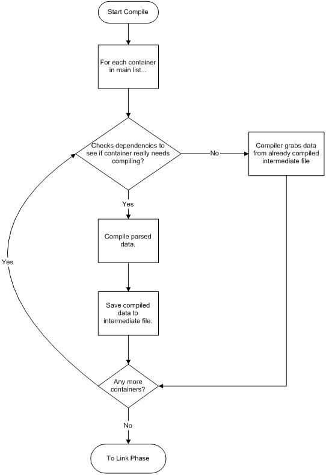

The compiler phase of XbRC is much simpler than the parsing phase.

We simply iterate over the main list of containers that we have and call their compile member functions. This is done by calling CXBParser::Compile. Each container on the main list has its compile function called, and the result is checked. If the result was an error that was not XBRC_COMPILE_NOT_NEEDED, we stop compiling at that point and XbRC exits with this error code. If the result was XBRC_COMPILE_NOT_NEEDED, we did not need to recompile this container because the existing intermediate file is OK and will be linked in at link time. If the result was S_OK, we write an intermediate file so that we can check dependencies during the compile phase when this resource is recompiled in the future. This allows an artist to change a single texture in the XDX file and not have to wait on all of the other textures to recompile when they are working with the Xbox Preview Pipeline.
Each container's compile function is very similar. First, they check dependencies to see if a recompile is necessary. If not, they return XBRC_COMPILE_NOT_NEEDED, and you move to the next container in the list to compile. Otherwise, the container calls its compiler data member and instructs it to construct the resource in memory from the data supplied in the container. The container compile function then returns S_OK if the compiler data member calls had no problems or the error that the compiler data member calls generated. If the container compiler returns S_OK, the Xbox resource data footprint is written to an intermediate file so that you don't have to recompile if the data hasn't changed. Then the linker can just grab the data footprint and put it into the resource file. Again, if the container compiler returns an error at this point, all compilation ceases and the error code is returned out of XbRC.